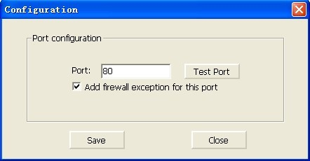
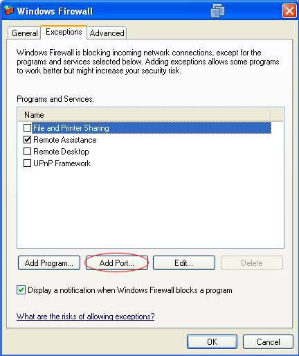
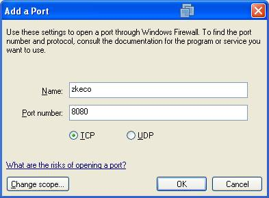
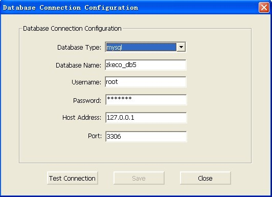

Put the installation CD into the CD driver, the system will automatically pop up the program selection menu. Select the software you want to install. The following is the installation process for an example.
3. Click [Next] button to display the next interface, it will prompt you to set the database backup path.
4.
Select the installation path of the software. It will be installed under the system disk by default, and click [Next] button.
5. Select the folder of shortcuts, and click [Next].
6.
You can select to use the default database, and then click [Next] to continue. Otherwise, select the database you have installed, and input the database information at right side of interface (For example the MySQL database):
Database Name: MySQL.
User Name: root.
Password: The password you set in configuration process.
Host Address: IP address for which installed the database server (If you have installed the database server at this PC, input the IP address of this PC).
Prot: Input the port number you set in configuration process (3306 by default).
When completed, click [Test Connection], and if the system prompts [Connection Successful], click [Next] to start installation. Otherwise, check and retry.
If MSSQLServer2005 database is selected, please refer to the relevant document for configuration.
If you need to use the database Oracle10i, please contact us for a new package.
Note: If you select to use remote MySQL database, after inputing all of the information, click [Next], and it will prompt “If convert the data code to utf-8 format, please select “Yes”and continue.
7.
The system will start to install the software. If your have installed the antivirus (such as 360, Rising, Kaspersky etc.) or other firewall software, they may stop the install program, and pop up a security prompt (or a similar one). If so, please select “Always Permitted” and add it to the antivirus or firewall software’s trust list. Or stop them temporarily to continue the installation.
8.
After software installation, it will prompt whether to restart the computer or not. The server program will be enabled only after restarting the computer. Select [Yes] to restart immediately, or select [No] to restart later.
9.
After software installation, from [Start] - [Programs] - [ZKECO Time & Security Management Platform], you will see such items as Home Page, Service Controller, and Uninstalled ZKECO Time & Security Management Platform. .
Select [Server Controller] in program menu, or double click [Server Controller] shortcut on desktop, and an icon will appear on the tray on the lower right corner of the desktop. Right-click on the icon, and the menu will be shown.
After Installation
After installation, please pay attention to these items:
1. Port Configuration:
Select [Configure server port] in the [Server Controller] menu , the following will be shown.

Click [Test port] (80 by default), if it is not usable, change the port number. If usable, click [Save] and quit. If you have changed the port number, please add “:port” after IP address when you access the system. For example, if you set the port as 8080, you need input [http://127.0.0.1:8080] in IP box.
2. In Windows Firewall configuration, set this port number as an exception, then other computers could access this server through internet.
Double click [Windows Firewall] under [Start] – [Settings] – [Control Panel], click [Exceptions], the interface shown below.

Click [Add Port], the following interface pops up.

Set the port name and port number, such as zkeco, 8080, click [OK] to save and exit.
3. Start/ Stop service:
After software installation, please restart your computer. Before using this program, please start [Service Controller], select [
No Server is running, start server please click here] in operation menu, and start the service, then double click ZKECO Time & Security Management Platform shortcut to use this program. After you using this program and quit, please click [
Server is running, stop it please click here] to end the service, and then click [
Exit Service Controller] .
4. Configure database:
During the use of this program, if you want change another database, please select [Configure database] in [Server Controller] operation menu, the following interface appear:

First test the connection, when the testing is successful before you can save the database configuration information. After you have successfully saved configuration information, confirm whether you need to initialize the database.
Select “Yes” to synchronize the database with the system, otherwise select “No” to cancel.